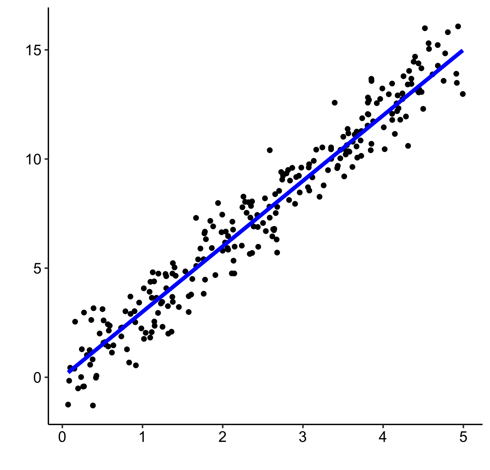

Chapter 3 The linear model… and where it fails
What do we mean by the linear model? Regression is the workhorse of statistics. It allows us to model a response variable as a function of predictors plus error. Linear regression is what most people first encounter in statistics. As we saw in Workshop 4: Linear models, linear regression relies on four major assumptions:
- There is a linear relationship between response and predictor variables: \(y_i = \beta_0 + \beta_1 \times x_i + \epsilon_i\)
- The error is normally distributed: \(\epsilon_i \sim \mathcal{N}(0,\,\sigma^2)\)
- The variance of the error is homogeneous (homoscedastic)
- The errors are independent of each other
A linear model can sometimes accommodate certain types of non-linear responses (e.g. \(x^2\)), but this approach strongly relies on decisions that can be either arbitrary or well-informed, and is much less flexible than using an additive model. For example, this linear model with multiple predictors can handle a non-linear response, but quickly becomes difficult to interpret and manage:
\[y_i = \beta_0 + \beta_1x_{1,i}+\beta_2x_{2,i}+\beta_3x_{3,i}+...+\beta_kx_{k,i} + \epsilon_i\] Linear models work very well in certain specific cases where all these criteria are met:

In reality, we often cannot meet these criteria. This means that in many cases, linear models are inappropriate:

So, how can we fit a better model? To answer this question, we must first consider what the regression model is trying to do. The linear model is trying to fit the best straight line that passes through the middle of the data, without overfitting the data, which is what would happen if we simply drew a line between each point and its neighbours. Linear models do this by finding the best fit straight line that passes through the data.
In the same way, additive models fit a curve through the data, while controlling the wiggliness of this curve to avoid overfitting. This means additive models like GAMs can capture non-linear relationships by fitting a smooth function through the data, rather than a straight line. We will come back to the concept of wiggliness later!